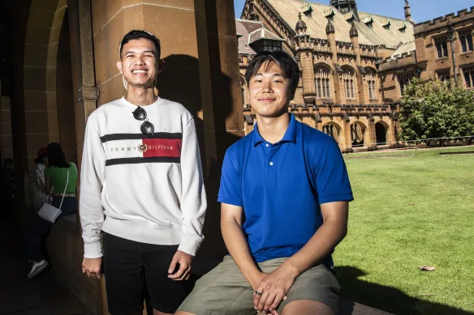

TASK 1 - you must check all switches in this page to move on

Step 1
What exactly students should do, this should be a small step in a long task. If, for example, a CNC machine is used in this step, the website will log this and track how many people (should) have used this CNC machine and estimate the relevent material/electricity cost.
heres a link to our AMME labs page
Step 2
Second step, this should be a small step in a long task.

Step 3
Third step, this should be a small step in a long task.